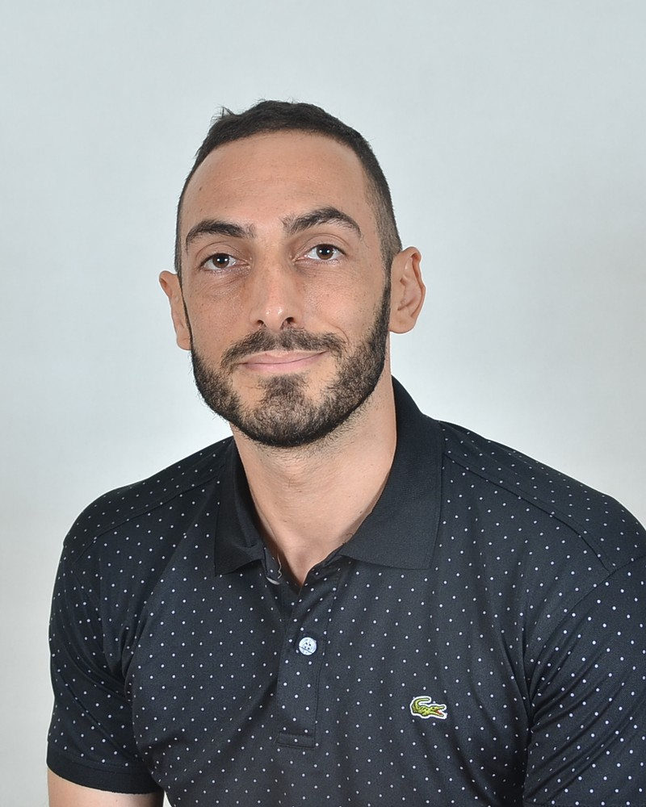

About the press
A small press, run by hand.

I'm Nathan Thompson — meditator, yogi, writer, and trader. Sometimes I work corporate jobs.
Jootbuddy Books is the imprint I set up to publish my books and undiscovered gems from other writers. "Jootbuddy" is the compound noun my daughter gave to her pacifier and favourite cuddly bunny when she was a toddler, and, as a nonsense word, feels right for an independent press that publishes the kind of book that doesn't slot neatly into a genre on Amazon.
The books will all be released electronically first due to the high cost of producing hard copies and mailing them globally. I'm hoping for these books to become popular, earn their keep, and graduate into hard copies when the demand comes.
The first book is Escaping Samsara: a collection of interviews with Ashtanga and yoga teachers from other traditions that first existed as a podcast. Serious yoga practitioners face a glut of poor information about the practice, and this book is a collection of teachers and practitioners I deeply respect for their sincere dedication to practising these ancient techniques and bringing their transformative potential to fruition.
Before publishing, I spent fifteen years as a journalist and communications consultant across Asia-Pacific. I've spent a rough total of 109 weeks on intensive Buddhist meditation retreat this lifetime, much of it in Thailand, near where I live. My yoga practice has run alongside all this covering Ashtanga Vinyasa up to fifth series, pranayama, and kriya.
Upcoming titles include books on fatherhood, travel, and recovery from addiction — all large themes in my life.
You can reach me at nat213@gmail.com.